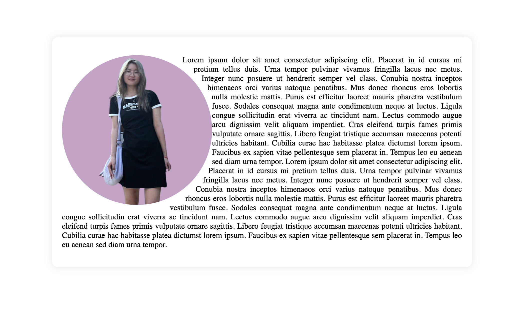

Learning Web Design
Learning Web Design is a great book for beginners to learn about HTML and CSS. It goes in-depth about each HTML and CSS element, but still makes things short and simple to understand. I highly recommend this textbook to beginning UI/UX Designers who want to add another skill to their toolbox.
Today, I wanted to share something I found super fun and interesting from Chapter 15, Floating and Positioning. The chapter talks about text wrapping—but not just the basic kind. It goes into how you can wrap text around transparent images, which was something we didn’t cover in class.
What caught my attention was how CSS handles transparent PNGs and how the text doesn’t just float around a box—it wraps around the visible part of the image, depending on how it’s styled. I loved this because it opens up a lot of creative possibilities for layout design, and it’s one of those small but impactful details that can elevate the way a webpage looks.
I’ve been playing around with the CSS shape-outside property, and it’s been really fun to experiment with! I added a shape-margin to create space between the circular image and the text, and while it helped, the text in the middle still ends up touching the edge of the circle more than I’d like. It definitely needs a bit more fine-tuning.
Even with that, I think this technique is super fun—especially for creative layouts like menu designs or any page where you want text to wrap around a cool shape instead of just a boring box. It’s something I want to keep experimenting with!